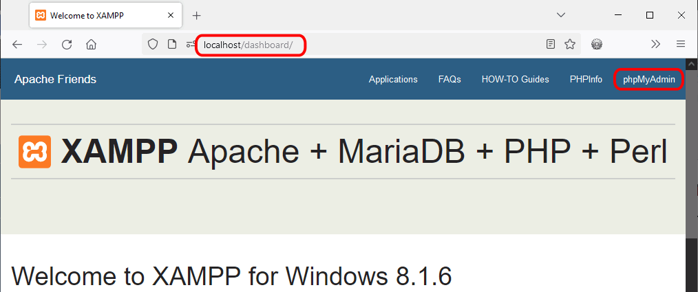

Los ejercicios de bases de datos propuestos en estos apuntes se pueden realizar trabajando con cualquier base de datos. En la lección PDO se mencionan dos de ellas: SQLite y MySQL/MariaDB. Como se comenta en la lección XAMPP, XAMPP incluye MariaDB, base de datos equivalente a MySQL (en el interfaz de XAMPP aparece a menudo la palabra MySQL pero se refiere siempre a MariaDB).
Un servidor MariaDB se puede gestionar mediante la aplicación web phpMyAdmin, que también está incluida en XAMPP. En esta lección se comenta cómo utilizar la aplicación phpMyAdmin incluida en XAMPP para crear los usuarios de MariaDB que utilicen las aplicaciones de los ejercicios. En los apuntes de Aplicaciones Web de mclibre.org hay unas lecciones dedicadas a la instalación y administración de phpMyAdmin como aplicación independiente, que amplían lo tratado en esta lección.
Las capturas de esta página corresponden a XAMPP 8.1.6 (mayo de 2022) pero son similares a las de otras versiones.
Iniciar MariaDB de XAMPP
Para poner en marcha el servidor MariaDB instalado por XAMPP se puede utilizar el panel de control de XAMPP
Si MariaDB está detenido, el botón de arranque/parada de MariaDB mostrará el texto "Start". Haga clic en él para iniciar MariaDB.
Si el servidor arranca correctamente, se mostrará el mensaje correspondiente en la parte inferior del panel de control, se mostrará con fondo de color verde el texto "MySQL" de la columna "Module" y el botón de arranque/parada mostrará el texto "Stop". Pulsando en él, se detendría el servidor.
Abrir phpMyAdmin de XAMPP
La aplicación phpMyAdmin instalada en XAMPP es accesible desde el panel de administración web (dashboard) de XAMPP.
Inicialmente, XAMPP instala MariaDB con el usuario administrador root sin contraseña y configura phpMyAdmin para que se conecte automática con ese usuario (sin contraseña). Si ha cambiado la contraseña del administrador de MariaDB, deberá cambiar el fichero de configuración de phpMyAdmin config.inc.php.
Para abrir el panel de administración web (dashboard) de XAMPP, abra en el navegador la dirección http://localhost/ (se abrirá automáticamente la página dashboard). Haga clic en el enlace phpMyAdmin situado arriba a la derecha:

Si el servidor rechaza la conexión de phpMyAdmin (por estar detenido o por error en el nombre de usuario o la contraseña) se mostrará un mensaje de error:
Si el servidor acepta la conexión, se abrirá phpMyAdmin. En los cuadros puede consultarse la versión de los servidores y aplicaciones utilizadas (Apache, PHP, MariaDB, phpMyAdmin).
Crear usuario
Para crear un usuario ...
Haga clic en el enlace "Cuentas de usuarios":
Haga clic en el enlace "Agregar cuenta de usuario"
Complete la información de la cuenta:
Nombre de usuario
Nombre de Host: Seleccione a la izquierda Local
Contraseña (dos veces)
Marque la casilla "Crear base de datos con el mismo nombre" para crear un usuario que solo puede crear una base de datos que se tiene que llamar igual que el propio usuario.
Haga clic en el botón "Continuar" situado al final de la página:
Si el usuario se crea, se mostrará la consulta efectuada, un mensaje de éxito y en el panel izquierdo se mostrará el nombre del usuario.